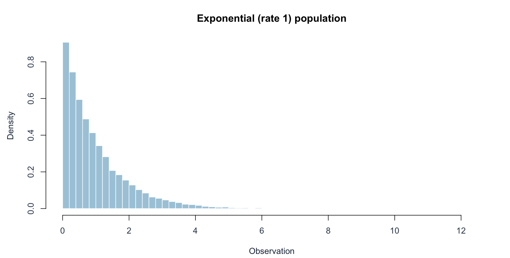
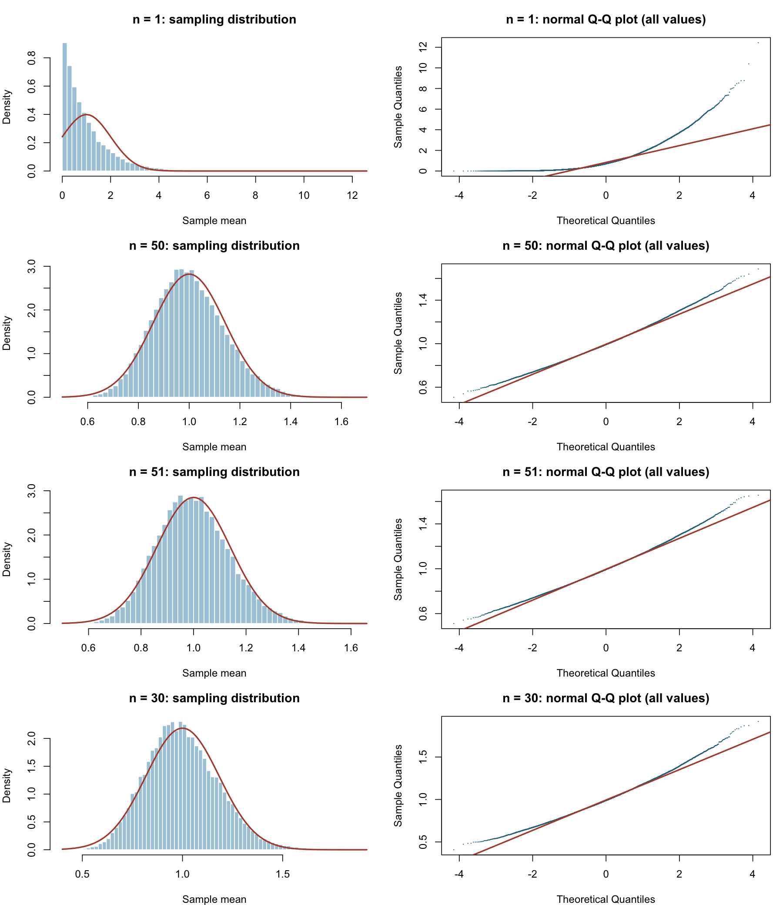
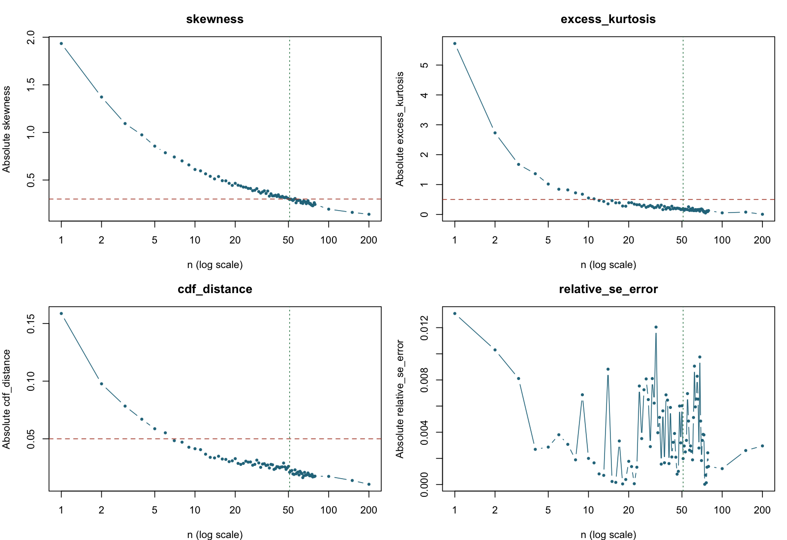

Observations are independent exponential waiting times with rate \(\lambda=1\). The population has \(\mu=1\), \(\sigma=1\), skewness 2, and excess kurtosis 6. It is strongly right-skewed, but its variance is finite.
The pre-simulation prediction is slower convergence than for the fair die. The exact sample-mean distribution is Gamma(shape=n, rate=n), with mean 1, SE \(1/\sqrt n\), skewness \(2/\sqrt n\), and excess kurtosis \(6/n\). These theoretical identities provide checks on the observed trend. For example, the theoretical skewness is about 0.365 at n=30 and first becomes at most 0.30 at n=45. A noisy empirical cutoff need not equal 45.
2 Original population

Original population, simulated with 30,000 observations and seed 5533.
3 Experimental design and decision rule
Each experiment uses 30,000 independent samples, with n observations in each sample. Each sample contributes one mean. Thus, increasing n changes the sampling distribution; increasing the number of repetitions B improves the precision with which that distribution is estimated. The seed is reset to 5533 immediately before each experiment. Reusing a seed makes configurations reproducible, but results across different n are not claimed to be independent.
For each finite-variance population, the initial grid is 1, 2, 3, 5, 10, 20, 30, 50, 75, 100, 150, 200. After finding the first passing coarse value, the program fills in every integer from 1 through that value plus 4. It extends the integer search if needed. The Cauchy experiment instead uses 1, 2, 5, 10, 30, 100, 300, 1000, because finite-variance thresholds do not apply.
The working definition of “normal enough” was specified before running the simulations:
Numerical diagnostic
Required value
Purpose
Absolute moment skewness
≤ 0.30
Limit asymmetry
Absolute excess kurtosis
≤ 0.50
Limit differences in tail weight and peakedness
Maximum empirical CDF distance from the theoretical normal
≤ 0.05
Limit overall distributional discrepancy
Relative error in empirical standard error
≤ 0.05
Check agreement with the CLT scale
Skewness uses \(m_3/m_2^{3/2}\) and excess kurtosis uses \(m_4/m_2^2-3\), where \(m_k=B^{-1}\sum_{b=1}^B(\bar X_b-\overline{\bar X})^k\). These are moment estimates without small-sample bias correction. The reported kurtosis is excess kurtosis: a normal distribution has value 0, not 3.
For a population with finite mean and variance, set \(Z_b=(\bar X_b-\mu)/(\sigma/\sqrt n)\). The CDF diagnostic is \(D=\sup_z|\widehat F_B(z)-\Phi(z)|\), computed on both sides of every empirical jump. It uses the known population parameters, not a normal fitted to the simulated means. It is a descriptive error tolerance, not a p-value. No continuity correction is used for discrete populations, so this criterion deliberately counts discreteness as part of the approximation error.
The selected candidate is the smallest tested integer beginning five consecutive passing values (n through n+4). Histograms and full normal Q–Q plots are then inspected to assess whether the candidate is useful for the central shape and ordinary probabilities. Small tail departures are allowed; accurate extreme-tail probabilities are not promised. The five-value rule reduces dependence on one favorable estimate, but cannot remove Monte Carlo error or guarantee monotone improvement.
The tolerances are transparent working choices, not instructor-prescribed thresholds or universal constants. A stricter tail criterion could select larger n. No criterion based on a finite variance is applied to Cauchy data.
4 Reusable simulation code
Code
# The full implementation is in R/simulation.R.# This small example is equivalent to the matrix implementation used for speed.set.seed(5533)example_n <-5Lexample_B <-10Lexample_means <-replicate(example_B, mean(populations[[key]]$draw(example_n)))example_means
The production function generates samples in batches of 1,000 rows, then calls rowMeans(). Batching avoids retaining a very large matrix. The same simulate_means() and diagnose() functions are used for every population. Diagnostics for every tested n are retained in the CSV files and RDS object. Raw sample means are retained at selected comparison sizes; all others can be regenerated from the seed and code.
The table shows the decision neighborhood and comparison sizes; the full numerical record is in results/exponential.csv.

Sampling distributions and full normal Q–Q plots. Red Q–Q lines are produced by qqline().

How the diagnostics change with n. For finite-variance populations, red dashed lines mark tolerances and the green vertical line marks the selected n. For Cauchy, the IQR reference is 2.
6 Conclusion and limitations
The primary run selects n = 51. At n=50, the skewness is 0.3054, above 0.30; at the chosen n it is 0.2958. The empirical mean is 0.9993 versus 1. The empirical and theoretical SEs are 0.1398 and 0.1400, respectively.
The histogram has become approximately bell-shaped, but the full Q–Q plot still bends in the tails. Calling this “normal enough” is a decision about moderate approximation accuracy, not a claim that the gamma distribution has become exactly normal. At n=30 the observed skewness is 0.3781, so the predeclared criterion fails.
7 Reproducibility and a second seed
Code
alt <- experiments$alternaterows <-do.call(rbind, lapply(c(30, 39, 51), function(n) {rbind(row_at(result,n), row_at(alt,n))}))show_table(rows[,c("seed","n","skewness","excess_kurtosis","cdf_distance","pass")])
Running the same code again with seed 5533 reproduces the stored n=30 means exactly (verified in validate.R). The separate experiment with seed 5534 repeats the same coarse search, integer refinement, B, and tolerances. It selects n = 39, compared with 51 in the primary run. No seed was substituted to obtain a preferred result.
This difference is the most informative unexpected feature of this experiment. The exact minimum selected by a threshold rule is unstable near its boundary, even after requiring five consecutive passing n. The normal-model approximation to the Monte Carlo SE of estimated skewness is \(\sqrt{6/B}\approx0.0141\); this is only an order-of-magnitude guide for a non-normal distribution. Reusing the seed also correlates neighboring experiments, so five passes are not five independent confirmations.
The broad scientific conclusion is unchanged: skewness decreases with n, n=30 fails this standard in both runs, and the finite-variance CLT applies. The precise selected n is not a population constant. A more conservative application would increase n or B and recheck the diagnostics rather than treat 51 as a sharp mathematical boundary.
8 Reproduction
Run Rscript run_simulations.R and Rscript validate.R from the project root, then quarto render. Software versions are recorded in results/session-info.txt.
Source Code
---title: "Exponential Distribution"subtitle: "CLT Project 1 · Monte Carlo investigation · Seed 5533"---[Executive summary](../index.html) · [Full R implementation](../R/simulation.R)```{r}#| include: falsesource("R/report_helpers.R")key <-"exponential"result <-result_for(key)if (!is.na(result$chosen)) { chosen <-row_at(result, result$chosen) previous <-row_at(result, max(1, result$chosen-1))}```## Population, theory, and predictionObservations are independent exponential waiting times with rate $\lambda=1$. The population has $\mu=1$, $\sigma=1$, skewness 2, and excess kurtosis 6. It is strongly right-skewed, but its variance is finite.The pre-simulation prediction is slower convergence than for the fair die. The exact sample-mean distribution is Gamma(shape=n, rate=n), with mean 1, SE $1/\sqrt n$, skewness $2/\sqrt n$, and excess kurtosis $6/n$. These theoretical identities provide checks on the observed trend. For example, the theoretical skewness is about 0.365 at n=30 and first becomes at most 0.30 at n=45. A noisy empirical cutoff need not equal 45.## Original population{{< include ../_methods.qmd >}}## Results and graphical evidenceThe actual sample sizes tested were:```{r}#| echo: falsecat(paste(result$diagnostics$n, collapse =", "))``````{r}#| echo: false#| results: asisdecision_table(result)```The table shows the decision neighborhood and comparison sizes; the full numerical record is in `results/exponential.csv`.## Conclusion and limitationsThe primary run selects **n = `r result$chosen`**. At n=`r result$chosen-1`, the skewness is `r fmt(previous$skewness)`, above 0.30; at the chosen n it is `r fmt(chosen$skewness)`. The empirical mean is `r fmt(chosen$simulated_mean)` versus 1. The empirical and theoretical SEs are `r fmt(chosen$simulated_se)` and `r fmt(chosen$theoretical_se)`, respectively.The histogram has become approximately bell-shaped, but the full Q–Q plot still bends in the tails. Calling this “normal enough” is a decision about moderate approximation accuracy, not a claim that the gamma distribution has become exactly normal. At n=30 the observed skewness is `r fmt(row_at(result,30)$skewness)`, so the predeclared criterion fails.## Reproducibility and a second seed```{r}alt <- experiments$alternaterows <-do.call(rbind, lapply(c(30, 39, 51), function(n) {rbind(row_at(result,n), row_at(alt,n))}))show_table(rows[,c("seed","n","skewness","excess_kurtosis","cdf_distance","pass")])```Running the same code again with seed 5533 reproduces the stored n=30 means exactly (verified in `validate.R`). The separate experiment with seed **5534** repeats the same coarse search, integer refinement, B, and tolerances. It selects **n = `r alt$chosen`**, compared with **`r result$chosen`** in the primary run. No seed was substituted to obtain a preferred result.This difference is the most informative unexpected feature of this experiment. The exact minimum selected by a threshold rule is unstable near its boundary, even after requiring five consecutive passing n. The normal-model approximation to the Monte Carlo SE of estimated skewness is $\sqrt{6/B}\approx0.0141$; this is only an order-of-magnitude guide for a non-normal distribution. Reusing the seed also correlates neighboring experiments, so five passes are not five independent confirmations.The broad scientific conclusion is unchanged: skewness decreases with n, n=30 fails this standard in both runs, and the finite-variance CLT applies. The precise selected n is not a population constant. A more conservative application would increase n or B and recheck the diagnostics rather than treat 51 as a sharp mathematical boundary.## ReproductionRun `Rscript run_simulations.R` and `Rscript validate.R` from the project root, then `quarto render`. Software versions are recorded in `results/session-info.txt`.